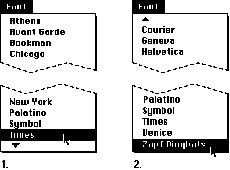
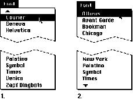

|
Scrolling MenusScrolling menus contain more menu items than are visible on the screen.(For a nonscrolling menu, you can usually use between eight and twelve menu items and still have a menu that is easy to use and to navigate.) Scrolling menus should exist only when a user adds many items to a customizable menu like the Font menu. If a menu becomes too long to fit on the screen, an
indicator appears at the bottom of the menu to show that
there are more items. When the user starts to scroll, an
indicator appears at the top of the menu to show that some
items are no longer visible in that direction. When the
user drags past the last visible item, the menu scrolls to
show the additional items. When the last item  Figure 4-35 shows the menu scrolling in the opposite direction. Figure 4-35 The menu scrolling in the other direction  If the user drags back up to the top, the menu scrolls back down in the same manner. If the user leaves the menu and comes back to it later, it appears in its original position, with the hidden items and the indicator at the bottom. |